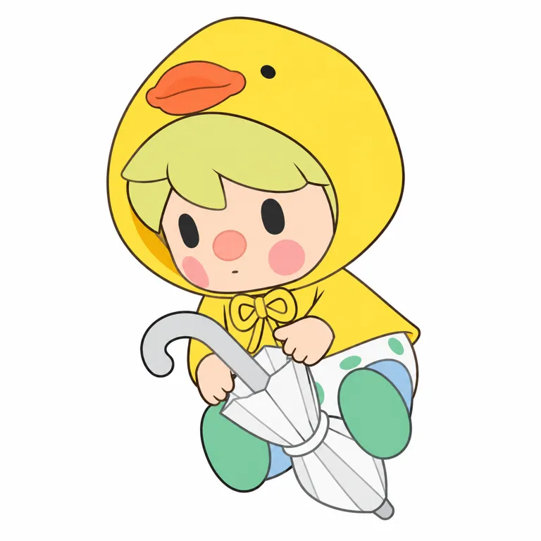

内核
孩童的玩耍与日常关心，作者生活经验与陪伴意图进入作品
POP MART / STANDARD STUDY / 2026.10.28
你已经很好了， 普通日子也值得被喜欢。
雪宸 Xuechen／POP MART Design Center
从作者原点，到角色与产品机制。
7组官方视觉 · 6项代表商品 · 13项来源
小红书按用户要求暂跳过 / 用户需求保留待验证
本轮为部分研究，已核与未知分别记录

把真实关系和日常片段， 变成一个动作、一句鼓励和能摆在身边的小场景。
角色设定、创作者自述与研究归纳分开。
两岁半孩子的低密度脸，与食物、日常和鼓励语句相连；作者把真实生活关系转成小场景。招股书创作年为2019，不能与2020商品推出混同；历史收入与促销都保留，疗愈愿景不当用户结论。
你已经很好了，普通日子也值得被喜欢。
本句为研究归纳（inferred），不是官方广告语或全体用户的心声。
天真、好奇、贪玩。像孩子一样探索食物、日常和亲密关系的小场景。
创作、首次公开、签约与首品，不合并成一个诞生日。
2020招股书内部设计团队表明确列SWEET BEAN Year of creation为2019；这是创作年，不是已证实首次公开或首售。作者直接访谈说明日常、关系和旅行进入系列；常见2020商品推出说法另待同期官方首发档案。 [PROS] [INT1] [INT2]
| 时间 | 核实的事件 | 证据 |
|---|---|---|
| 2019 | 2020招股书内部设计团队表列创作年2019，产品类型盲盒 | fact [PROS] |
| 2021上半年 | 中报称PDC小甜豆系列收入超过63.7百万元，非全年 | self_report [FIN21] |
| 2021/2022 | 全年归类收入161.526与147.940百万元，2022同比约-8.41% | fact [FIN22] |
| 2023-03-03 | INSTINCTOY联名美国商品页记录 | self_report [SKU06] |
| 2025-02/05 | I Want a Hug与The Language of Love商品记录 | self_report [SKU04] [SKU03] |
| 2025-09/11 | Ordinary Days场景盒与Exclusive Holiday手办记录 | self_report [SKU02] [SKU01] |
| 2025-10-07/08 | 作者访谈谈生活经验、鼓励与陪伴意图 | self_report [INT1] [INT2] |
招股书印刷页235，SWEET BEAN明确列在内部设计团队自有IP表中，Year of creation为2019。创作、首次公开与商业推出是不同节点；本轮不把常见2020商品记录改成2019首售，也不把设计师2015起做原创误当角色诞生。 [PROS]
世界观与作者意图不能直接替代用户感受。
官方设定年龄两岁半，面部是简单豆眼、圆鼻和小嘴；拥抱、亲近、茶饮和交通小场景把情绪放在关系和动作里。不能由幼态外形直接推出用户都是不想长大的成年人。 [COL] [MAIN] [SKU02] [SKU03] [SKU04]
作者在中文访谈里把You're the best的设计联系到自己被身边人鼓励的经历。她也转述过粉丝摆放作品与看到语句感动的个案；这些只作为间接线索，用户本人的购买、感受和长期使用尚未采样。 [INT2]
孩童的玩耍与日常关心，作者生活经验与陪伴意图进入作品
婴儿、腮红、动物帽、食物与鼓励语都是公共语言；具体脸部配置和产品关系仍是独立身份
先下载并实际看图；不以生成图补作官方证据。


官方原作品通过原站图链引用；图链失效时可打开出处。当前主图不自动等于最早角色原稿。所有图像观察仅针对已看样本，无用户识别率或官方技术图结论。
固定什么、变化什么；判断均保留样本范围。
| 维度 | 本轮观察 |
|---|---|
| 原型／轮廓 | 人 / 大头小身 / 单角色 |
| 标记位置与记忆点 | 五官、头型：简单黑椭圆豆眼、圆粉鼻、大腮红、小嘴与圆润幼态脸；服装和物件承担主题 |
| 五官 | V01无眉无睫黑豆眼、圆鼻、两圆腮和极小嘴，浅黄绿发在鸭帽下；跨样本发色和眼色处理可变 |
| 反常点与情绪 | 面部信息很少，外壳/道具却能丰富；圆鼻与豆眼区别于单靠大眼的角色 / 内收 |
| 密度与名称 | 中等 / 描述 |
低信息豆眼圆鼻脸，借服装与物件构成生活场景；鸭帽是局部样本
记录渲染，不冒充生产色卡。
V01黄鸭雨衣、浅黄绿发、粉鼻与绿鞋；不同日常主题换色
面部黑眼/粉鼻/腮红的对比关系为样本锚点，黄鸭不是全IP唯一签名
八区屏幕取样来自V01当前宣传图，暖光与阴影明显；不做官方量产色卡或母版。
本地V01转RGBA；左上为坐标原点，每个中心9×9逐通道中位数。阴影、高光、压缩与显示均会影响色值；未测面积配比，也没有校色或实物色差验证。
价格、地区、材料、尺寸与发售日期分别记录。
| 商品 | 当日地区标价／发售记录 | 规格／材料／边界 |
|---|---|---|
| Your Exclusive Holiday 手办 [SKU01] [COL] | USD 19.99 US / 2025-11-06 | 7.9–10.4cm PVC／ABS／PC 节日群像主题，图上全部道具/布景不等于每盒内容。 |
| Celebrate Ordinary Days 场景套装 [SKU02] [COL] | USD 19.99 US / 2025-09-18 | 外壳7–8.7cm；页另列Height3.5cm，指代待核 ABS／PVC／五金／电子元件 壳与人物分开；3.5cm原文字段指代不清，不擅自写成全套总高。 |
| The Language of Love 手办 [SKU03] [COL] | USD 9.99 US / 2025-05-16 | 7–9cm ABS／PVC／五金／电子元件 当日集合HTML50%促销9.99、原标19.99；推荐位仍19.99，适用范围/期限未知，不作永久定价。 |
| I Want a Hug 手办 [SKU04] [COL] | USD 19.99 US / 2025-02-07 | 7–9cm PVC／ABS／五金／电子元件／聚酯 不同款道具、电子功能和附件未逐件拆验。 |
| Afternoon Tea 手办 [SKU05] [COL] | USD 15.99 US / 2024-04-05 | 2.76–3.54英寸 PVC／ABS／金属 食品/饮料外观不等于真实食品或软胶材质。 |
| × INSTINCTOY Sweet Together 联名 [SKU06] [COL] | USD 17.99 US / 2023-03-03 | 2.5–4.1英寸 PVC／ABS 整盒12不重复，隐藏概率未核；冰晶外观不证明真实玻璃或树脂。 |
公司、IP、系列、年度与半年度分别看。
| 指标／期间 | 数值与单位 | 主体／证据 |
|---|---|---|
| 小甜豆归类产品收入 2021全年 | 161.526 百万元人民币 | POP MART按IP分类收入 [FIN22] |
| 小甜豆归类产品收入 2022全年 | 147.94 百万元人民币 | POP MART按IP分类收入 [FIN22] |
2021全年161.526百万元，2022全年147.940百万元，同口径约下降8.41%。2021中报另称半年超过63.7百万元，是下限叙述，不能拿它与全年直接算增长。当前促销存在也不能单独证明滞销，缺少库存、毛利与活动策略。 [FIN21] [FIN22] [COL]
财报按IP归类收入不等于作者收入、授权费、零售GMV或二手市场规模。材料百分比不等于成本配比；未披露团队、毛利和库存不作估算。
本批遵照用户要求先跳过小红书；不编造评论与人群比例。
| 维度 | 证据与假设 |
|---|---|
| 人群入口 | 幼态、食物、场景收藏与鼓励礼物是候选入口；无年龄性别占比 |
| 接触地点 | POP MART官方渠道、艺术家展会；本批跳过小红书 |
| 购买证据 | 历史分IP收入支持商业规模；没有个人复购、订单或转售成交样本 |
| 识别线索 | 两岁半、豆眼圆鼻、拥抱、爱的语言、日常场景与青蛙等物件线索需按样本核 |
| 分享行为 | 作者转述床头/浴室摆放与被鼓励感动，仅间接个案，非本轮直接访谈 |
| 破圈 | 文字礼物和联名可增加接触；真实送礼占比与新增用户未知 |
幼态与熟悉生活场景可能容易理解（假设）
不同日常物件、鼓励语的来源与系列记忆可能深化收藏；未核长期持有人行为
历史分IP收入比点赞更强，但不能分离设计细节贡献；作者转述个案不是订单或用户总体。
今天的审美不能直接反推早期成功。
独处、收礼、睡前、日常休息与需要鼓励的时刻；成年人的功能要求与孩子式简单快乐并存
我也想偶尔被夸一句、被抱一下。
幼态与日常关心的审美/表达定位；不等同心理疗效。
可与强态度、复杂剧情角色作对照，但未证明2019此定位稀缺，也不把2019创作解释成疫情驱动。
2019创作早于疫情，不能用疫情焦虑作万能起源解释。PDC、商品开发和既有渠道是组织条件，日常鼓励是内容候选机制；本轮没有实验拆分各自销售贡献。 [PROS] [INT2]
候选机制不冒充因果证明。
| 候选机制 | 局部支持 | 边界与替代解释 |
|---|---|---|
| 小表情保留情绪空间，主题由动作与物件补足 inference | 豆眼圆鼻在鸭帽、茶饮和联名样本中重复；雨伞、杯子、场景与文字改变语境。 [MAIN] [SKU02] [SKU04] [SKU05] [SKU06] | 没有去道具识别、情绪理解或用户盲测，不能说越简单越容易投射。 |
| 真实关系片段可以转成可被理解的鼓励内容 inference | 作者说You're the best设计来自身边人对自己的鼓励；产品已有爱的语言系列。 [INT2] [SKU03] | 作者转述他人感动不是本轮直接用户证据；语句是否促进送礼或复购未知。 |
| 场景盒把角色带进可陈列的小生活空间 hypothesis | Ordinary Days用交通座位等小空间包裹人物，壳与角色分别有尺寸。 [SKU02] | 只确认产品结构与可见场景，没有实测互动耐用性、使用频次或留存。 |
| 内部设计与既有渠道降低新品落地的组织门槛 inference | 招股书内部创作清单、PDC署名与历史单IP收入可以对应。 [PROS] [COL] [FIN22] | 专属团队、成本和渠道归因未知；2022收入回落反证成熟渠道不保证每年增长。 |
测试输入、依赖与观察完整保留。
鸭帽橙嘴、浅黄绿发、豆眼粉圆鼻大腮、黄披肩、腿脚朝前与折伞斜向均接近。手指、发块与鼻部轮廓简化，仍有浅色过渡；透明伞转为灰白面。只通过该可见视角附图平面转译，不是纯文字或生产结构验证。
研究重建词，不是创作者原词。参考图SHA256与真实输出路径见测试档案。
Use the attached official character rendering as the sole identity, geometry, outfit, pose and prop reference. Translate exactly the visible baby in the yellow duck rain hood into one clean flat 2D full-body character illustration on a white square canvas. Preserve the enormous rounded duck hood with orange duck bill at its upper viewer-left/front and small black duck-eye dot, the pale yellow-green chunky side-swept fringe underneath, broad pale peach face, two simple tall black oval eyes with no white highlights, one round salmon-pink button nose, two large muted rosy cheek disks and tiny quiet mouth. Keep the yellow rain cape with a small tied yellow bow beneath the chin, bare chubby hands, white lower garment with visible mint-green oval spots, pale-blue inner leg areas and two rounded mint-green boot soles pointing toward the viewer. Preserve the exact diagonally tilted sitting or floating pose, the viewer-right knee raised high, viewer-left leg lower, head angled toward viewer-left and both hands placed around the folded umbrella across the front. The umbrella has a thick pale-gray curved hook entering from viewer-left and a folded clear canopy extending diagonally down to viewer-right between the feet; represent the canopy using simple light gray-white flat angular panels and thin contours, not real transparent reflections. Preserve the actual head-to-body scale, eye spacing, nose size, hand positions, umbrella orientation and silhouette from the reference. Use thin clean dark outlines and solid flat local colors, removing plastic gloss, sculptural shading, material texture, cast shadows and all photographic lighting. Do not add a smile, eyelashes, eyebrows, black pupils inside white eyes, a fully opened umbrella, standing legs, new props or scenery. No text, no logos, no watermark. Reconstruct only this visible view and do not invent unseen structure.下载原词 ↓
无数值相似度、多人盲测或重复稳定性结论。未经测试的原创黑白、平面、实物六条词不进入可执行正式区；研究复现不等于原创身份开发。
沿用既有study v0.3，不升级skill。
可借从具体关系和生活片段产生表达，保留谁在何时需要鼓励；不把所有成人写成孤独缺爱。
可借面部低信息与主题道具的分工；重新设计原型及眼鼻嘴关系，避免豆眼粉圆鼻大腮的同组合。
将单体摆件、场景盒、语句礼物与联名分开验证；尺寸区分壳/人物，电子元件和聚酯按SKU，不推BOM和毛利。
截止2026-10-28（北京时间）；访问程度与结论边界逐项列出。
POP MART美国站 · 发布：未知 · 访问：full
两岁半、PDC Xuechen署名；读取当日HTML时Language of Love有19.99原价/50%OFF9.99，索引仍19.99，活动期限未核。
POP MART／招股书 · 发布：未知 · 访问：partial
已下载原PDF，读印刷页235表；SWEET BEAN创作年2019、类型Blind box，内部自有IP；不是首次公开/首售日期。
POP MART／港交所 · 发布：2021-09-28 · 访问：partial
印刷页7称2021上半年超过63.7百万元人民币，是下限叙述，不当精确全年收入。
POP MART／年报 · 发布：2023-04-21 · 访问：partial
下载原PDF并读按IP收入表，人民币千元161526/147940；自有分类为历史披露，非2026销量。
Harper’s Bazaar Singapore／直接访谈 · 发布：2025-10-07 · 访问：full
作者经历、设计过程与愿景；同文照片alt写Ling而正文Xuechen，别名关系不另作推定；与Marina Bay Sands合作。
NUYOU／直接访谈 · 发布：2025-10-08 · 访问：full
作者生活与鼓励设计自述；粉丝摆放/感动仅作者转述，本轮未直接访问那些用户；同SPH活动背景。
POP MART · 发布：未知 · 访问：partial
实际下载并看1920×2704鸭帽雨衣渲染，图像原始创作/首发时间未知，不当2019原稿或具体SKU材料证据。
POP MART美国站 · 发布：未知 · 访问：full
节日群像主题，图上全部道具/布景不等于每盒内容。 发售记录为该地区页面日期；当日标价不是实际销量。
POP MART美国站 · 发布：未知 · 访问：full
壳与人物分开；3.5cm原文字段指代不清，不擅自写成全套总高。 发售记录为该地区页面日期；当日标价不是实际销量。
POP MART美国站 · 发布：未知 · 访问：full
当日集合HTML50%促销9.99、原标19.99；推荐位仍19.99，适用范围/期限未知，不作永久定价。 发售记录为该地区页面日期；当日标价不是实际销量。
POP MART美国站 · 发布：未知 · 访问：full
不同款道具、电子功能和附件未逐件拆验。 发售记录为该地区页面日期；当日标价不是实际销量。
POP MART美国站 · 发布：未知 · 访问：full
食品/饮料外观不等于真实食品或软胶材质。 发售记录为该地区页面日期；当日标价不是实际销量。
POP MART美国站 · 发布：未知 · 访问：full
整盒12不重复，隐藏概率未核；冰晶外观不证明真实玻璃或树脂。 发售记录为该地区页面日期；当日标价不是实际销量。